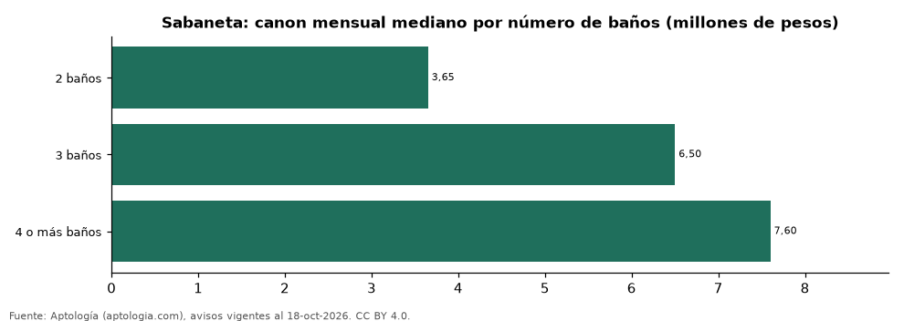

Casas en arriendo en Sabaneta según número de baños: precio y m² de cada grupo (octubre 2026)
Estudio con datos abiertos (CC BY 4.0). Versión original: https://github.com/elbroker/aptologia-datos/tree/main/estudios/casas-en-arriendo-por-numero-de-banos-sabaneta-2026 · DOI: 10.5281/zenodo.23521422
En Sabaneta, una casa en arriendo del grupo «2 baños» se pide en 3.650.000 pesos al mes en la mediana y una del grupo «4 o más baños» en 7.600.000 pesos al mes (+108,2 %). Por metro cuadrado, el más barato es «4 o más baños» (25.397 pesos/m² al mes) y el más caro «2 baños» (35.714 pesos/m² al mes).
Resumen: analizamos 155 casas en arriendo en Sabaneta con número de baños declarado.
Actualizado: 18 de octubre de 2026 (datos del 18 de octubre de 2026) · Próxima actualización: mensual.

Resumen
| Indicador | Valor |
|---|---|
| 2 baños | 3.650.000 pesos |
| 3 baños | 6.500.000 pesos |
| 4 o más baños | 7.600.000 pesos |
| Avisos | 155 |
Canon mensual y m² por número de baños
| Número de baños | Canon mensual (mediana) | Rango típico (P25–P75) | Por m² (mediana) | Área mediana (m²) | Avisos |
|---|---|---|---|---|---|
| 2 baños | 3.650.000 pesos | 2.637.500 pesos – 5.700.000 pesos | 35.714 pesos | 110 | 40 |
| 3 baños | 6.500.000 pesos | 4.955.000 pesos – 6.900.000 pesos | 29.902 pesos | 217 | 44 |
| 4 o más baños | 7.600.000 pesos | 6.500.000 pesos – 11.000.000 pesos | 25.397 pesos | 340 | 71 |
Medianas del canon pedido, sin administración ni gastos comunes; grupos con menos de 30 avisos se omiten.
Preguntas frecuentes
¿Cuánto cuesta arrendar una casa con cuántos baños en Sabaneta? 2 baños: 3.650.000 pesos al mes; 3 baños: 6.500.000 pesos al mes; 4 o más baños: 7.600.000 pesos al mes (medianas de octubre de 2026).
¿Qué grupo sale más barato por m²? Por metro cuadrado, el más barato es «4 o más baños» (25.397 pesos/m² al mes) y el más caro «2 baños» (35.714 pesos/m² al mes).
Metodología
- Fuente: exportes nocturnos de la base de datos de Aptología (aptologia.com) del 18 de octubre de 2026: avisos vigentes de vivienda en portales inmobiliarios de 13 países, recogidos por Aptología y vistos en línea entre el 11 y el 18 de octubre de 2026. Corte: 18 de octubre de 2026.
- Depuración: se eliminan duplicados exactos (misma ciudad, zona, tipo, precio, moneda, área, habitaciones y baños) y los precios fuera del percentil 1–99 de cada país, operación, moneda y tipo; el precio por m² usa solo avisos con área declarada entre 12 y 2.000 m² y también se recorta al P1–P99.
- Qué se mide: precios pedidos (publicados), no precios de cierre. En arriendo, el canon mensual sin administración, gastos comunes ni condominio.
- Muestra mínima: cada cifra publicada se apoya en al menos 30 avisos; las celdas con menos se omiten.
- Colombia: Precios en pesos colombianos, sin conversión de moneda.
- Cordura: solo se publica si la mediana crece con número de baños.
- Limitaciones: la cobertura depende de los portales que recorre Aptología en cada país y es mayor en las ciudades grandes y en los segmentos medio-alto y alto; el área es la que declara el aviso, sin verificar; los nombres de zona vienen de los portales.
- Privacidad: solo se publican agregados; no se publica ningún dato personal, enlace a avisos ni nombre de anunciante.
- Datos abiertos: datos.csv, licencia CC BY 4.0.
Cómo citar
Pinzón Pineda, D. M. (2026). Casas en arriendo en Sabaneta según número de baños: precio y m² de cada grupo (octubre 2026). Aptología (aptologia.com). https://github.com/elbroker/aptologia-datos/tree/main/estudios/casas-en-arriendo-por-numero-de-banos-sabaneta-2026. Datos: datos.csv, licencia CC BY 4.0.